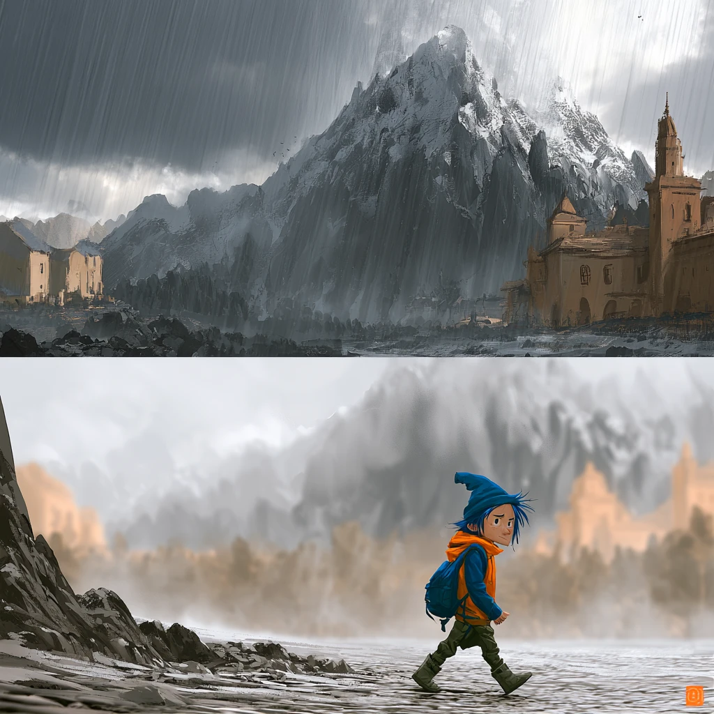

Weather
It is going
to rain for
a while.
Forecast for the middle
The middle of a hard season does not get a real forecast. This is our best guess.
WhenWhat it will doWhat you will need
TodayRain.Your coat.
TomorrowRain.Your coat.
This weekRain, mostly.Your coat.
This monthIt starts to clear. You will not notice the day it happens.Your coat, for now.
After thatSun.You will not need it.
“Weeping may stay for the night, but joy comes in the morning.” — Psalm 30:5
Between Sundays · Issue 001Page 20